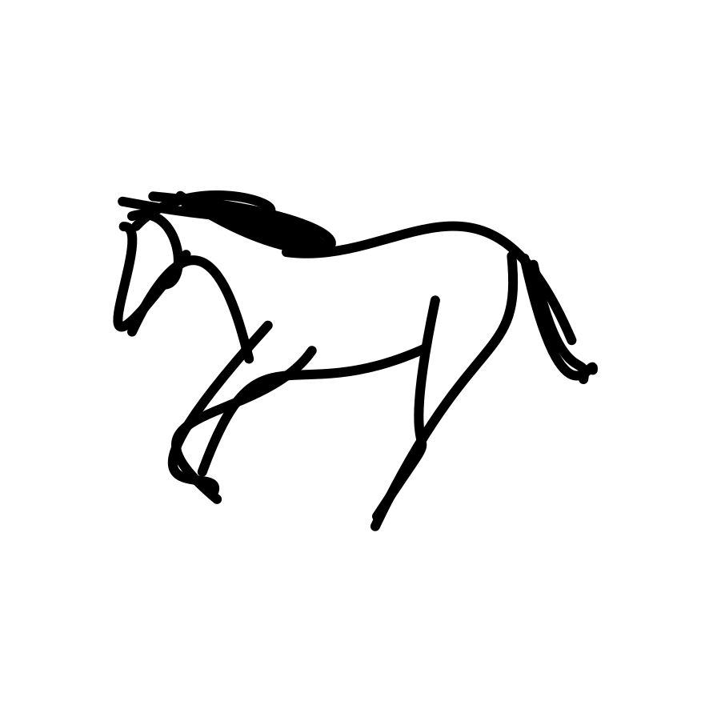
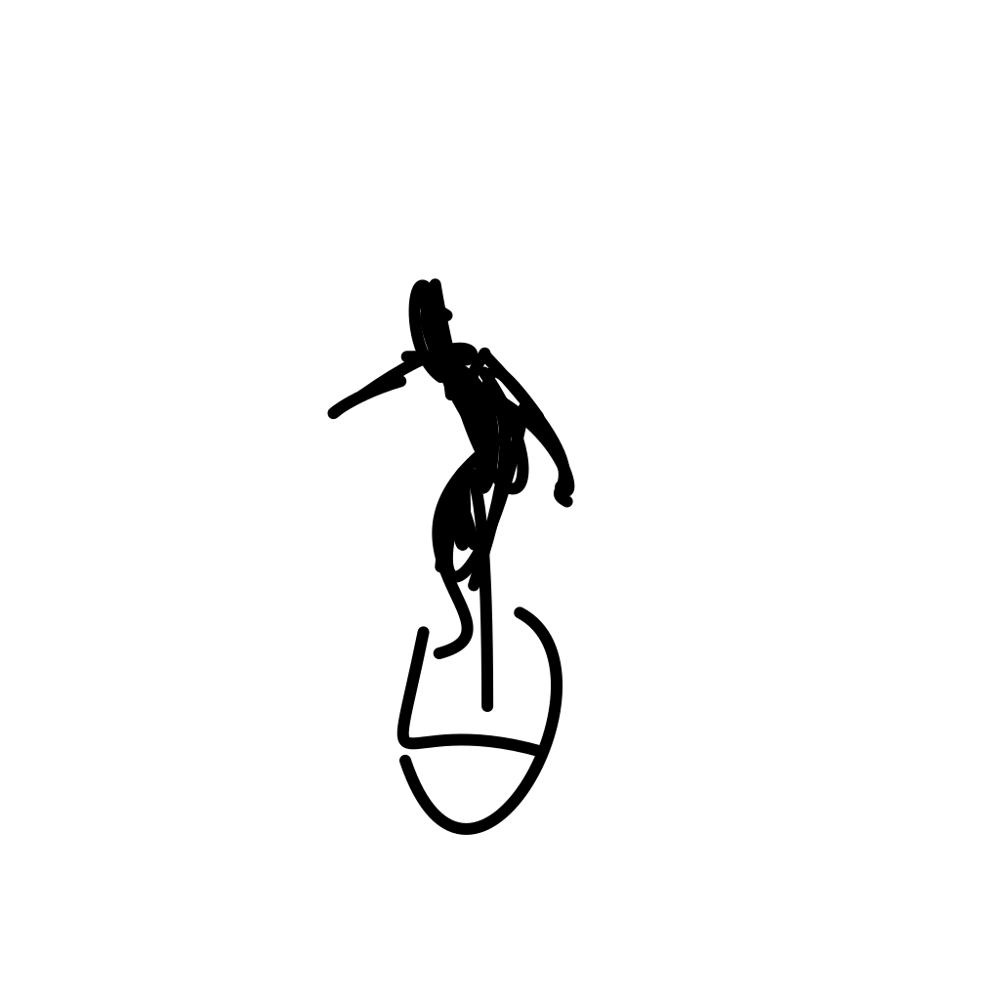
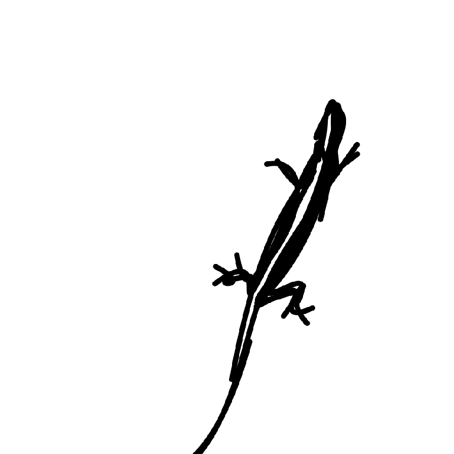
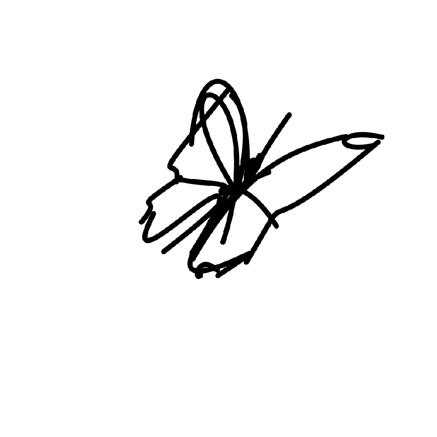
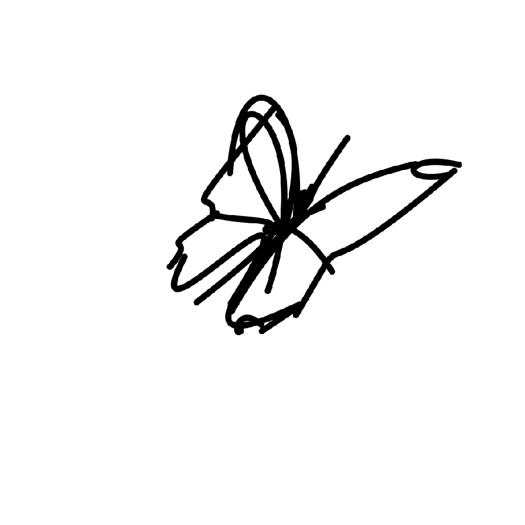

Results

A galloping horse.

A surfer riding and maneuvering on waves on a surfboard.

The lizard moves with a sinuous, undulating motion, gliding smoothly over surfaces using its agile limbs and tail for balance and propulsion.
 
